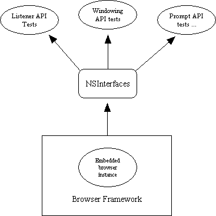
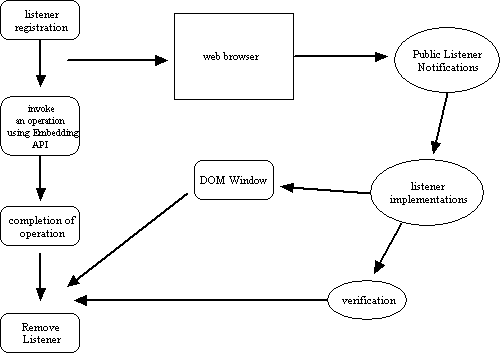

- Introduction
- Dependencies
- Pull and Build the latest Mozilla source.
- Install Visual C++ or some other C++ compiler.
- Utilize existing test applications like testEmbed or MfcEmbed.
- Modify existing apps and/or design new ones suitable for testing the APIs.
- General knowledge and code walkthroughs of the APIs and interfaces (idl files and source code).
- The API Testing Process
- Define an input process to call interfaces, feed data into API methods, and use attributes. Two ideas that come to mind are script-executed calls relayed to the APIs, and entry of data from dialogs within a GUI test app like MfcEmbed. The general data format of test input is "interface : method : method input data". (e.g. nsIWebNavigation: loadURI() : uri, loadFlags). The format for testing attributes would be something like "interface : attribute : method used with attribute" (e.g. nsILoadGroup : mDefaultLoadRequest : GetName() ).
- Propagate test driver execution. These are tests that will directly test the interfaces, API methods, and attributes, either one at a time or grouped together. The drivers can be executed within the context of a test app or independently from a shell environment.
- Capture results from driver execution. This can be done with callbacks sent directly to dialogs, if inside a test app, and/or to an output log file. The captured data would include which interfaces and methods were called, invoked attributes, and results from executing these methods.
- Validation of Results. When applicable, results from test execution will be checked with internal test code (e.g. string compares) or by comparison to baseline output files. If checked internally in the test app, then pass/fail determination will occur before printing the results to the logfile. Otherwise, file comparisons between test output and baseline file(s) will be performed.
- Different Approaches
- Use an existing test application. Use hooks inside of the app to accept interface and method calls routed to the APIs. This can be done by sending JavaScript functions from an html file that pass data to the test app. The results of these test executions would be captured and printed to a logfile. They possibly could be validated using JS calls. See mfcembed.htm for examples of how it utilizes CreateBrowserWindow() method of the nsIWebBrowserChrome interface.
- Create a test bed framework. This approach would in effect modify an existing app to make it more QA friendly, or would require designing a base test app. The setup would be configured to load a base framework when the app is launched. This framework would be the creation of the browser frame, a browser view (creating the first instance of the embedded browser), and a glue interface binding the frame with a set of required Gecko implementations. Once this framework was loaded, then menu items could be selected in the app to load the chrome, test UI routines (e.g. windowing, cut/paste, view source, etc), exercise listener interfaces and handle callbacks, and run network API tests for such areas as httpChannel (request methods) and protocol handler.
- Use command line script activation, calling native app test harness . Here, the main idea is that the scripts would be cross-platform while the apps would be written to test the APIs for that specific platform. One idea is that a Perl driver would dispatch commands to the native app which in turn would handle them as separate tests. The test app could be written as a shell app to make it easier to port to other platforms.
- Write class libraries for QA usage. This would provide standard methods for invoking actions like data creation, feeding data input into API methods, capturing results and printing to a log file, monitoring internal states, and bug tracking. The class libraries most likely would be written in C++. They would be primarily written to make it easier for QA to write their test drivers, utilize shared code and perform cross-platform testing. This approach can be used in conjunction with any of the other approaches, but most particularly with the last one discussed.
- Mixed Strategies
- Test architecture. One large test driver or app will become a headache to maintain and debug. More efficient will be smaller, modular apps each testing specific functionality. The individual drivers could be linked together by script execution, but each driver would be called separately in this case.
- Manual testing and Automation. There will be occasions when test results will need to be visually inspected to determine if the output is providing QA with accurate results, and to track down bugs. However, automation will be used whenever it is convenient to do so. Examples of when automation can be effective include running acceptance tests on new builds, performing regression tests on established APIs, and for sanity checking.
- Entry/Exit points, States, and Processes. Every test case should have sufficiently defined entry and exit criteria to determine passage or failure of that test. The test case might involve one specific API method (i.e. resizing a browser window), or might invoke a group of methods (i.e. to test a listener or observer). For defined library methods, the entry point will be the actual calling of the API method(s). Input parameter data, if applicable, will be seeded into the method. The exit point will be the point where the method returns data or control back to the calling app. Test results will be logged to the output file.
- Platform vs. Cross-Platform testing. Test apps with GUI are by their very nature platform specific. An app like MfcEmbed is convenient to run and add test cases to for Windows testing. But shell apps will be easier to port to other platforms/OSs like Linux and Mac. Scripts should be written to be cross platform, yet even when this is the case, there will always be platform-specific issues. For example, if Perl is used as the script driver, there will be implementation issues on the Mac (involves utilizing Apple Events).
- Browsers, non-Browsers, and User scenario testing.
A browser test
app is a great way to use the API set. There might also be application
developers who will use the APIs to create non-browsers as well, like
client graphic applications. The mixed strategy here is to create different
contexts and user scenarios that capture varying usage of the APIs. In other
words, don't rely on one test app.
- The Listener Process. At the heart of asynchronous processes of the Embedded APIs are listeners. Listeners (and Observers) are designed to monitor event handling and capture the resulting callbacks sent to the calling app. This is accomplished by invoking customized listener implementations. The state transition methods described above will be necessary to test these processes. Both the actual occurrence of callbacks and their sequence will be tracked.
- Test case example. Here is a sample code snippet utilizing API methods of the NSIGlobalHistory interface. A global history class is declared in a header file. Then, there will be the implementation of the methods in the .cpp file. The two methods are addPage() and IsVisited(); addPage() adds a URL to the global history while IsVisited() determines if the URL has been visited. Finally, an instance of NSIGlobalHistory object will be created in the nsMyBrowserInstance.cpp file. The XPCOM service manager will register the object via a contract ID, and if the object is recognized, will call the 2 API methods.
- Other Documentation
- Revision History
This document will explore different approaches that can be applied
to methodically test the Embedding API set. These APIs are used by application
programmers to render, display, and manipulate web content in an embedded
framework (i.e. customized browsers). The role of Quality Assurance will be to
insure that the APIs are functioning correctly within a variety of contexts.
In order to write test drivers to exercise these APIs, the following are necessary:
The build process will not be described in this document. For more info on that, go to: http://www.mozilla.org/build/win32.html
Utilizing existing test apps and creating new ones will be discussed
in this document.
Here is an outline of QAs process for performing effective functional
testing. It will be further described in subsequent sections:
Note that there are different considerations for testing synchronous and asynchronous processes. For synchronous ones, a straighforward tracking of entry and exit points of API methods will suffice. For asynchronous ones, where timing and event handling occur, we will be concerned with what events are triggered, callbacks from asynchronous processes, if they return at all, the sequence of callbacks, cancellation and timeout issues. The monitoring of these processes are more involved and will be discussed in later sections.
There are a few testing approaches to choose from. Each one will be
briefly discussed with emphasis upon how they can be applied to the task
at hand. Variations as well as combinations of such approaches might work
as well.
The benefit of this approach is that it could exercise the APIs utilized
by an existing test app. We wouldn't have to start from scratch. QA would
write the functions to cover all the applicable permutations of each API.
Breakpoints could be setup in the test app (e.g. MfcEmbed) to view how
the data inputs and callbacks were being handled. One downside I can see
is that it might become a file management problem if a great many files
are created.
One advantage of this approach is that a minimal framework would itself be utilizing a core set of APIs. If the framework wasnt created during launch, then it would be easier to isolate the problem to one of these APIs if in fact in was the culprit. Once successfully launched, additional tests would be performed by selecting menu items. These selections could correspond to embedding interfaces. Cascading menus would be created to handle nested API methods, or a dialog could be displayed for user selection of method, parameter inputs, or execution of a sequence of APIs.
Alternatively, the menus would correspond to well-formulated test cases. For example, one menu item might be for resizing the browser, another for activating a web progress listener routine, and so forth. In either case, the menus would be thematically grouped together: listeners/callbacks, prompts, windows/viewers, file handling, profiles, or grouping by interface.
The downside is that time would have to be invested to reconfigure an
existing test app or create a new one. That involves using native classes
(i.e. MFC) and interfaces.

The native app would have a command handler to accept and process these commands. Entry and exit points would be tracked to determine what values are actually passed to and returned from the API methods. This information would be printed to a log file.
In addition, a nonintrusive profiler could be setup to instrument the code, monitoring their various state transitions (such as found in listener processes: registration, embedded object handling, invoking the listener, and notification). For each state, a print statement would be made to a stack trace, a written record of the state and call histories of the exercised APIs. This would make it easier for QA to isolate bugs that will be nested in the APIs.
The profiler could also monitor other processes like the spawning of
threads. This could be valuable to check parent/child thread handling,
ref counts, and tracking memory leaks.

As stated above, combinations of approaches might be the prefered strategy
for QA. This probably would expand testing coverage, improve efficiency,
and address platform issues. Some of mixed strategies will now be briefly
discussed.
If the architecture involves implementing a component model, then each
test component will be assigned specific functionality to test. Data input
sets would be created to test all the permutations and pathways of that
component (say NSPrompts). In addition, there might be codependencies between
components, so data flow and callbacks would have to be identified to properly
capture accurate results.
Automation will only be used after QA has implemented a test architecture.
The actual test cases have to be created first before automation can occur.
Script languages like Perl and JavaScript could be used for such purposes.
There will be other tests that have intermediate states to capture,
especially for asynchronous processes. Listeners have various states like
object creation, registration of the listener via IID or contract ID, storage
in the embedded Gecko object, invoking the listener, event handling, and
notification callback. Each state should be tracked and results logged.
For asynchronous methods that need to be implemented (i.e. listener
notifications), The entry point occurs when it's called by the browser
engine. The methodology is to track when it's called, capture the
parameter values passed to it, set callback switches (if applicable),
and track notification messages returned to the caller. The exit point
is when the series of events is completed (e.g. when a listener is
unregistered).
Finally, there could be tests to track processes like thread handling,
memory issues, resource management, etc. This would involve additional
implementation besides the direct API tests, and might involve using
debuggers,
profilers, and other tools; but this testing could be valuable to help
developers track down memory leaks, failures, and so forth.
From this perspective, the soundest approach will again involve a mixed
strategy. Test apps that effectively test the APIs on one platform should
be used or developed. Cross-platform solutions should be pursued when
reasonable to do so.
Another consideration is that there might be different ways to invoke
APIs. For example, they can be invoked as methods in objects or as stand
alone method calls. Different class hierarchies and interface calls should
be tried to see if there are no functionality failures.
Here is a flow diagram of a typical listener process:

The actual listener process between registration and unregistration is complex. Various states and notifications can occur during the process. Most listeners will have flags for three primary states: start, transfer, and stop. Some listeners support additional states. For example, nsIWebProgressListener interface also includes states for redirecting and negotiating (authentication).
A listener interface should have a method capturing the various states. Using nsIWebProgressListener as an example, there is the onStateChange() method. This is a notification that tracks state changes for document load requests. The situation is further complicated because there can be multiple windows and url requests, each with its own set of states. QA will write cases to monitor these sets, their sequence of occurrence, and make sure that each set accurately corresponds to the correct request.
In general, depending upon the listener implementations, various sets of state permutations can occur. Additionally, there are other factors to consider. For example, different document types and requests are supported. The web progress listener has flags for full document loading and requests made from within documents. QA should create a test matrix for each listener to outline the permutations of state transitions and other factors.
Finally, after a validation phase that can be accomplished through a DOM interface, internal checking of results, or interpreting output files, the listener is deregistered. This is done by removing the listener. In nsIWebProgress, there is a method called removeProgressListener(). Like its 'add' counterpart, it returns either NS_OK and NS_ERROR_INVALID_ARG.
nsMyGlobalHistory.h:
#include "nsIGlobalHistory.h"
class nsMyGlobalHistory : public nsIGlobalHistory,
public nsISupports
{
public:
// implements public interfaces
NS_DECL_ISUPPORTS
NS_DECL_NSIGLOBALHISTORY
private:
// member variables
FILE *globalHistoryFile;
const char *theURL;
protected:
// local methods
void ReadFromGHFile();
void WriteToGHFile(const char *theURL);
PRBool SearchForURL(const char *theURL);
}
#include "nsMyGlobalHistory.h"
#include <fstream>
// constructor
nsMyGlobalHistory::nsMyGlobalHistory()
{
// reads from Global History file
ReadFromGHFile();
}
// destructor
nsMyGlobalHistory::~nsMyGlobalHistory()
{
// Updates Global History file
WriteToGHFile(theURL);
}
NS_IMETHODIMP nsMyGlobalHistory::AddPage(const char *aURL)
{
PRBool retVal;
nsresult rv;
ofstream output("myfile");
// checks if the url is valid
if (!aURL) return NS_ERROR_FAILURE;
IsVisited(aURL, &retVal);
output << "IsVisited() returns = " << retVal << endl;
// will only write to the global history file if the url
// hasn't been visited.
if (retVal == PR_FALSE)
// save url to global history file
WriteToGHFile(aURL);
else
return NS_ERROR_FAILURE;
return NS_OK;
}
NS_IMETHODIMP nsMyGlobalHistory::IsVisited(const char *aURL,
PRBool *myRet)
{
// checks if the url is valid
if (! aURL) return NS_ERROR_FAILURE;
if (! myRet) return NS_ERROR_FAILURE;
// searches for URL in the Global History file
*myRet = SearchForURL(aURL);
return NS_OK;
}
// This registers the object - exposes it to the XPCOM registry.
NS_GENERIC_FACTORY_CONSTRUCTOR(nsMyGlobalHistory);
static nsModuleComponentInfo components[] = {
"nsMyGlobalHistory", // object
NS_GLOBALHISTORY_CID,
NS_GLOBALHISTORY_CONTRACTID,
nsMyGlobalHistoryConstructor
};
...
class nsEmbedAPITests
{
public:
// test methods
myGHImpl(); // for Global History
...
private:
// data
...
}
#include "nsMyGlobalHistory.h"
#include "nsMyBrowserInstance.h"
#include <fstream>
// test implementation of global history API methods
void nsEmbedAPITests::myGHImpl()
{
ofstream output("myfile");
// create instance of myHistory object. Call's XPCOM
// service manager to pass the contract ID.
nsCOMPtr<nsIGlobalHistory> myHistory(do_GetService(NS_GLOBALHISTORY_CONTRACTID));
if (myHistory)
{
nsresult rv;
output << "Testing addPage(): " << endl;
// adds a url to the global history
rv = myHistory->addPage(theURL);
// prints results to output file
if (NS_FAILED(rv))
output << "addPage() test failed." << endl;
else
output << "addPage() test succeeded." << endl;
output << "Testing IsVisited(): " << endl;
// checks if url was visited
myHistory->IsVisited(theURL, &theRetVal);
// prints results to output file
output << "IsVisited() returned value = " << theRetVal << endl;
}
}
...
// create local test object
nsEmbedAPITests *localTest;
// execute Global History test
localTest->myGHImpl();
Here are other docs providing additional information about Embedding APIs:
David Epstein. 03/12/01. Created.
David Epstein. 03/27/01. Added test example.
David Epstein. 03/30/01. Modified "API Testing Process" section.
David Epstein. 04/05/01. Enhanced example, added info about async processes.
David Epstein. 04/12/01. Added section describing listeners.
David Epstein. 07/02/04 Some minor reformatting and updating.